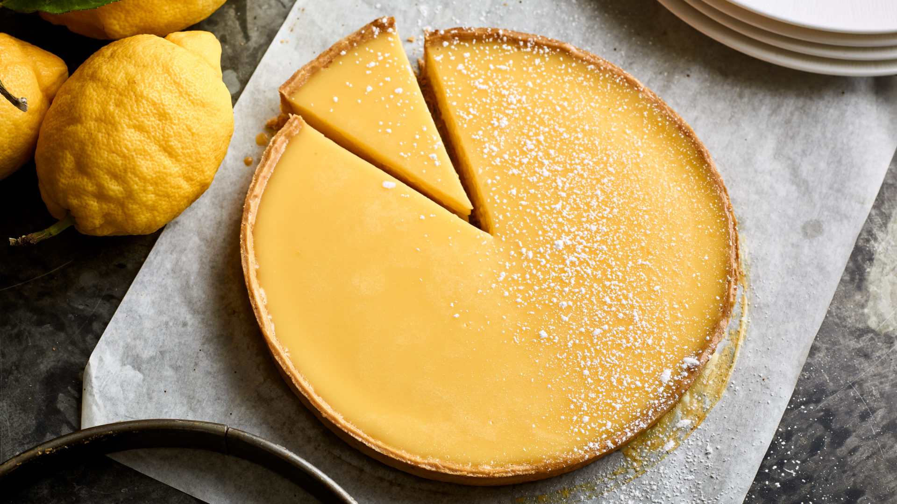

Tarte au Citron

In 1800s France, the lemon tart was served to the King as a symbol of wealth and goodness.
Sweet shortcut pastry filled with a zesty lemon custard, this delicious sweet and sour treat will be sure to wow all those who taste it.
For the pastry
- 120g unsalted butter, at room temperature, diced
- 75g icing sugar, sifted, plus extra for dusting
- 3 egg yolks
- 250g plain flour
- 2 tbsp water
For the lemon custard
- 5 medium organic or free range eggs
- 150g caster sugar
- 85ml lemon juice
- 2 tbsp lemon zest, finely grated
- 150ml double cream
- In a large bowl, with a wooden spoon, mix the butter and icing sugar to a cream, then beat in 2 of the egg yolks.
- Add the flour and, using your fingertips, rub the butter mixture and flour to achieve a crumbly texture.
- Add the water and press the mixture together to form a ball.
- Knead the pastry on a lighly floured work surface until it is blended (maximum 30 seconds).
- Flatten the pastry slighly with the palm of your hand, wrap in cling film and refrigerate for 30 minutes.
- In a large bowl, mix together the eggs, sugar, lemon juice and zest and whisk for a few seconds.
- Add the cream and whisk it in, then place in the fridge.
- On a lightly floured surface, evenly roll the pastry into a 3mm thick circle. Roll the pastry over the rolling pin and unroll it over a 24cm loose-bottomed tart tin. Carefully tuck the pastry into the bottom edge of the tin so that it fits tightly.
- Cut off the excess patry and prick the base of the pastry all over with a fork and refrigerate for 30 minutes.
- Preheat the oven to 160C/325F/Gas Mark 3. Line the pastry case with foil and fill with baking beans, pushing them against the side. Bake for 10 minutes, then remove from the oven and lift out both foil and beans.
- Return the tart to the oven and bake for a further 20 minutes.
- Brush the inside of the pastry with the remaining egg yolk and return to the oven for 1 minute.
- Turn the oven down to 140C/275F/Gas Mark 1.
- Pour the lemon cream mixture into a saucepace and warm it gently to a maximum of 40C. Pour the warm mixture into the pastry case and bake for 25 minutes, until barely set.
- Remove from the over and leave to cool for at least 1 hour, then decorate with icing sugar around the edge of the tart.